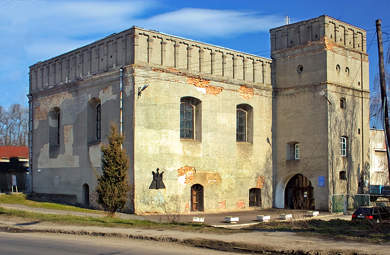
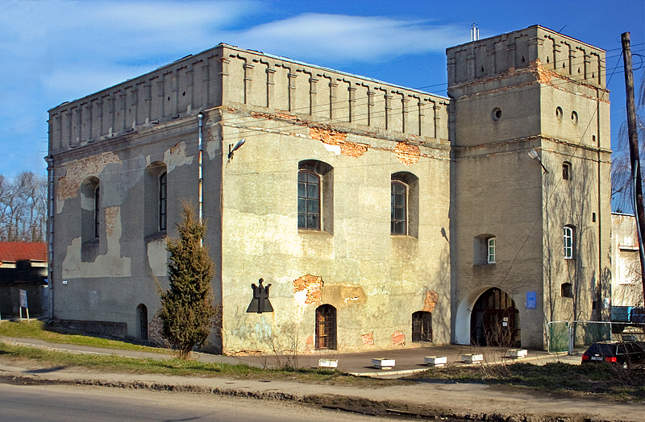

Луцьк - дуже багатопланове місто, насичене пам'ятками історії та мальовничими видами. Малий Рим Сходу - називають його поціновувачі. Серце Волині. Місто новаторів і дослідників-практиків. Давайте ж прогуляємося вуличками та найцікавішими місцями Луцьку.
Замок Любарта, XIV— XV ст. Оборонна споруда, символ міста.

Собор святих Петра і Павла

Свято-Троїцький кафедральний собор

Велика синагога

Вежа Чорторийських

Лютеранська кірха

Собор Покрови Пресвятої Богородицi

Собор святих Петра і Павла
Свято-Троїцький кафедральний собор
Велика синагога
Вежа Чорторийських
Лютеранська кірха
Собор Покрови Пресвятої Богородицi